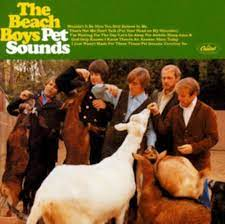
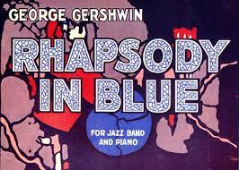

Hi, here are some album/song recommendations from four different genres of music.
1. Pop
Album: Pet Sounds by The Beach Boys
In my opinion, this album contains some of the most incredible moments of music ever composed. Pet Sounds has consistently been lauded as one of the greatest albums of all time, and it is certainly deserving of that title even 55 years after its release. Pet Sounds is full of intricate melodies, stunning orchestrations, polyphonic harmonies, and beautiful lyrics, yet it remains very accesible for any listener. The lyrics of songs such as "That's Not Me" and "I Just Wasn't Made for These Times", are touching, qualities that I've never heard replicated this well in any other music. Part of the reason why I hold Pet Sounds in such high regard is because of how many perspectives the album can be listened from. Every song is so dense and full of sound, that I've "discovered" new melodies and instruments from songs I have heard countless times. It's honestly a little difficult for me to fully put into words how much this album means to me, it is incredible and you should absolutely go listen to it.
2. Jazz/Classical
Song: Rhapsody in Blue by George Gershwin
3.Shoegaze
Album: Ceres & Calypso in the Deep Time by Candy Claws
4. Psychedelia
Album: Begin by The Millennium